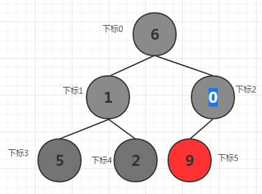
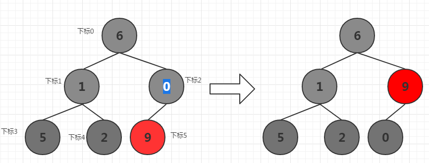
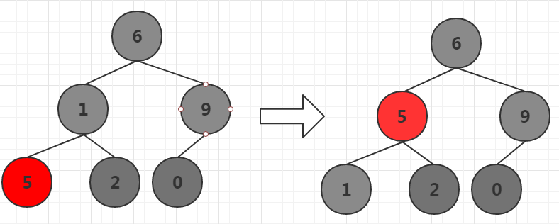
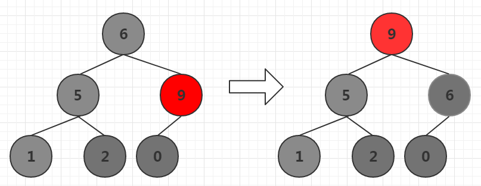
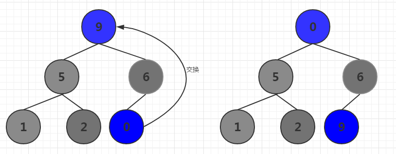
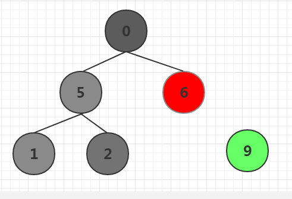
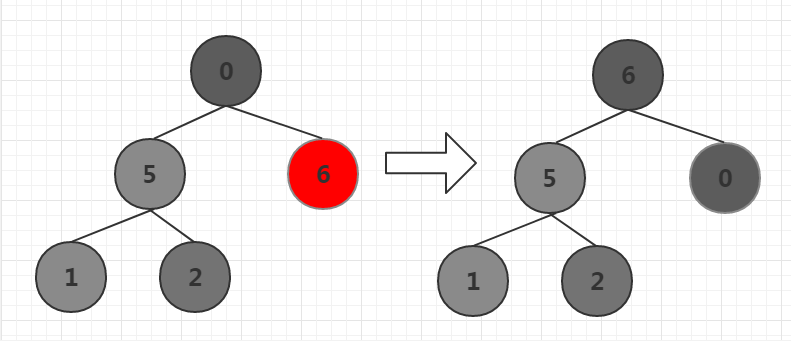
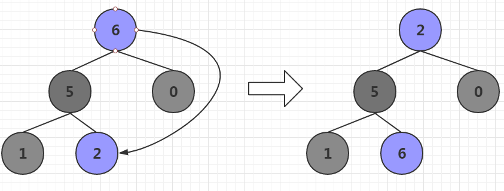
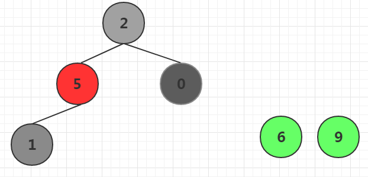

前文介绍了golang实现基本的四中排序，本文带领大家实现堆排序，堆排序是效率很高的算法，通过取出大根堆堆顶元素从而实现排序的算法。
该算法以出色的效率著称，时间复杂度为O (nlgn)
堆排序描述
什么是大根堆
1 大根堆是一颗完全二叉树
2 该完全二叉树，根节点一定大于等于其左右子节点，并且大于等于其子树所有节点。
完全二叉树
完全二叉树是相对于满二叉树来讲的，对于深度为K的，有n个结点的二叉树，当且仅当其每一个结点都与深度为K的满二叉树中编号从1至n的结点一一对应时称之为完全二叉树。
满二叉树：
一棵深度为 k，且有 2k - 1 个节点称之为满二叉树，即每一层上的节点数都是最大节点数。
也就是说完全二叉树可以这么理解，在一棵二叉树中，除最后一层外，若其余层都是满的，并且最后一层或者是满的，或者是在右边缺少连续若干节点，则此二叉树为完全二叉树（Complete Binary Tree）
下图就是一个完全二叉树

算法图解
假设有序列
下标 | 0 | 1 | 2 | 3 | 4 | 5 |
数值 | 6 | 1 | 0 | 5 | 2 | 9 |
将该序列构造成上图的二叉树，首先从最后一个非叶子结点(也就是下标2的节点元素0)开始，将其所在子树调节为大根堆

由于9比0大，所以二者交换位置，这样下标2所在子树就变为大根堆了。接下来从右往左，从下往上依次处理所有非叶子节点所在子树，使其依次形成大根堆。下面处理下标为1的子树。

下标1的两个子节点中5比2大，选择最大的子节点5和1比较，由于5比1大，所以二者交换位置，这样下标1所在子树就变为大根堆了。接下来处理下标0所在子树，使其成为大根堆。

同样选择下标0最大的子节点9和下标0的元素6交换位置，这样最大元素9放在下标0的位置，由于6和9交换位置，还要考虑元素6所在的下标为1的子树是否因为交换导致失去大根堆特性，如果6比其子节点小，则继续将6下移，直到找到合理位置。此时6比其子节点0大，所以不需要移动了。
下标0就是根节点，到此为止一颗大根堆构造完成。
接下来将根节点9和最后一个元素交换，n为最后一个元素。这样调节前n-1节点，是这些节点构成大根堆。
具体操作如下图
交换最后一个元素和根节点

将最后一个元素排出不再比较，比较前n-1个元素，重新构造大根堆。

以此类推，
将n-1个节点调整为大根堆

前n-1调节为大根堆后，将根元素和第n-1元素交换

将第n-1个元素取出。

这样最后两个元素分别为6,9，是从小到大拍好的顺序，继续使前n-2节点形成大根堆。直到n=1
算法实现
首先定义一个HeapSort类，然后设计一个成员函数adjustHeap，该函数主要实现将index所在位置的子树构造成大根堆。
adjustHeap的三个参数分别为一段连续的数据序列，index表示子树根所在位置，length表示要排序的长度。
1 | type HeapSort struct { |
接下来实现一个小函数，用来交换两个位置的元素
1 | func (hs *HeapSort) swap(array []int, i, j int) { |
接下来实现将n个元素排序成大根堆，并且交换根元素和第n个元素，并将第n各元素排出，继续比较n-1个元素构造大根堆的逻辑
1 | func (hs *HeapSort) sort(array []int) { |
ok，算法完成，可以进行测试了
1 | func main() { |
结果如下，打印的是每次排出元素后序列的结果
1 | [6 5 6 1 2 0 9] |
目前为止，堆排序介绍完了，欢迎下载源码
源码下载地址
谢谢关注我的公众号